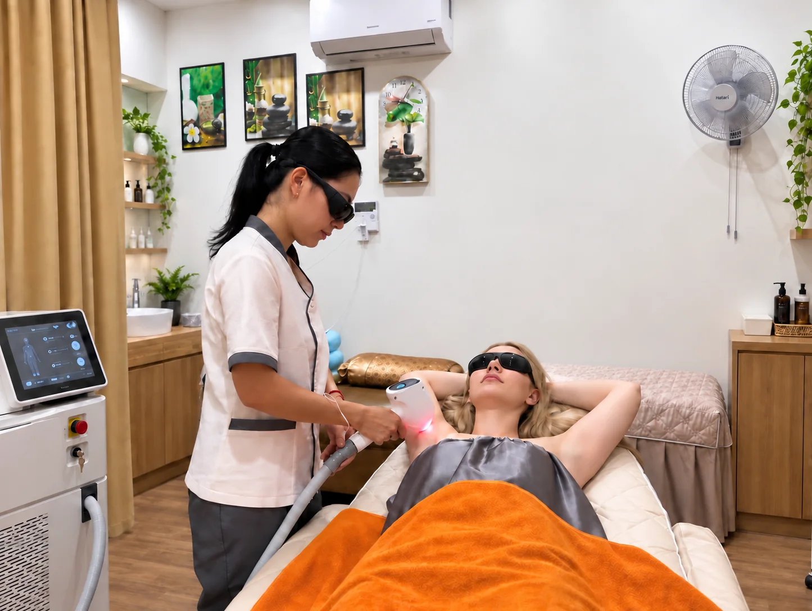
Laser Hair Removal · Skin Care in Da Nang
Laser Hair Removal.Skin Care in Da Nang.
Private care · Clear consultation · Comfortable experience.
Miki Skin Spa tập trung vào triệt lông, chăm sóc da, hỗ trợ da mụn, waxing và body care trong không gian riêng tư, sạch sẽ và nhẹ nhàng tại Đà Nẵng.
⭐ 4.9 Google Reviews
🛡️ Private 1-on-1 Riêng tư · sạch sẽ
❄️ ICE Cooling -25°C Thiết bị triệt lông Miki
01 · DỊCH VỤ NỔI BẬT
Các dịch vụ chính
tại Miki.
Những nhóm dịch vụ khách chọn nhiều nhất, trình bày ngắn gọn để bạn dễ xem hình, tham khảo giá và đặt lịch nhanh.
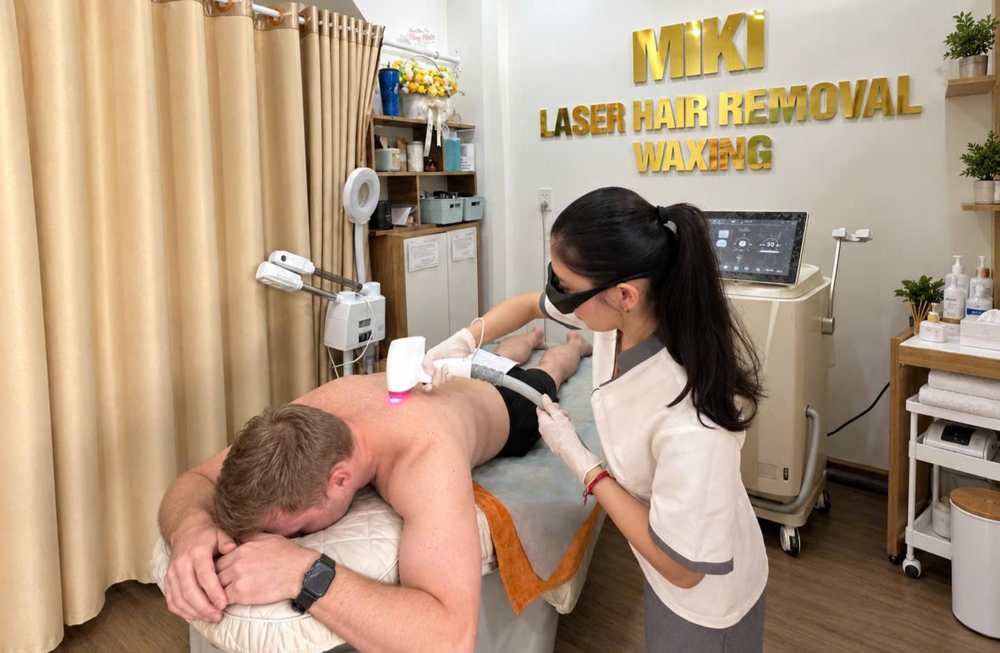
Laser Hair Removal
Triệt lông công nghệ Laser Hàn Băng ICE Cooling -25°C không đau rát, chú trọng sự riêng tư 1-on-1, tư vấn rõ ràng và hướng dẫn chăm sóc chuyên sâu.
Xem bảng giá & Đặt lịch →Waxing Chuyên Nghiệp
Waxing sáp ấm theo từng vùng, phù hợp với khách cần làm sạch lông nhanh, nhẹ nhàng và đảm bảo vệ sinh tuyệt đối.
Đặt lịch trải nghiệm →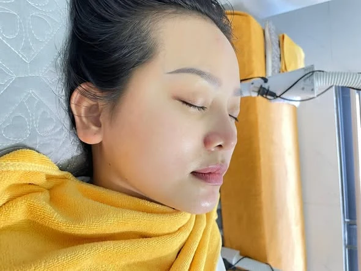
Chăm Sóc Da Chuyên Sâu
Làm sạch sâu, cấp ẩm tầng sâu và thư giãn định kỳ theo tình trạng da cá nhân hóa.
Tư vấn da miễn phí →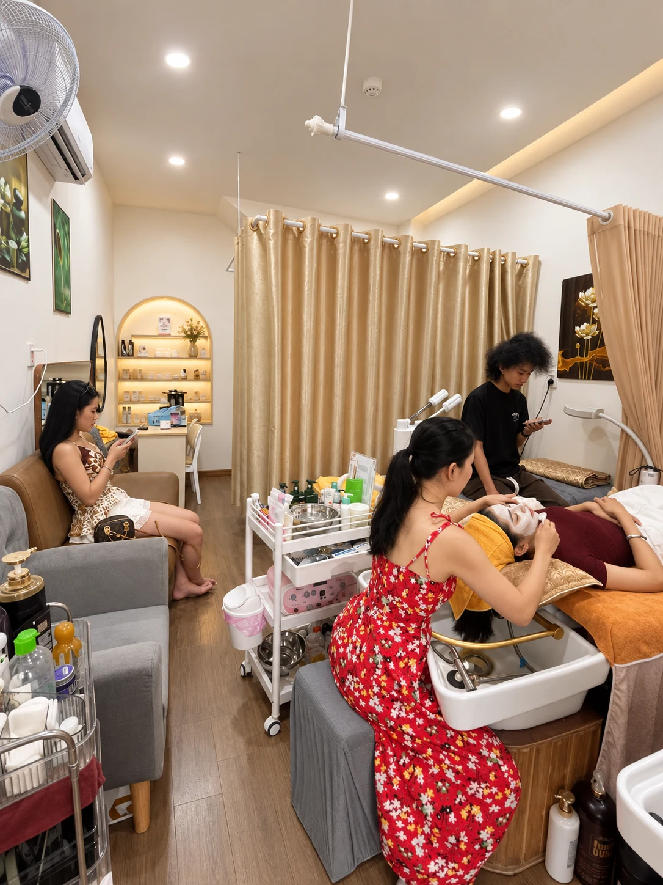
Điều Trị & Hỗ Trợ Da Mụn
Chăm sóc da mụn chuẩn y khoa, làm sạch nhân mụn nhẹ nhàng, giảm bít tắc và hướng dẫn skincare tại nhà.
Đặt lịch khám da →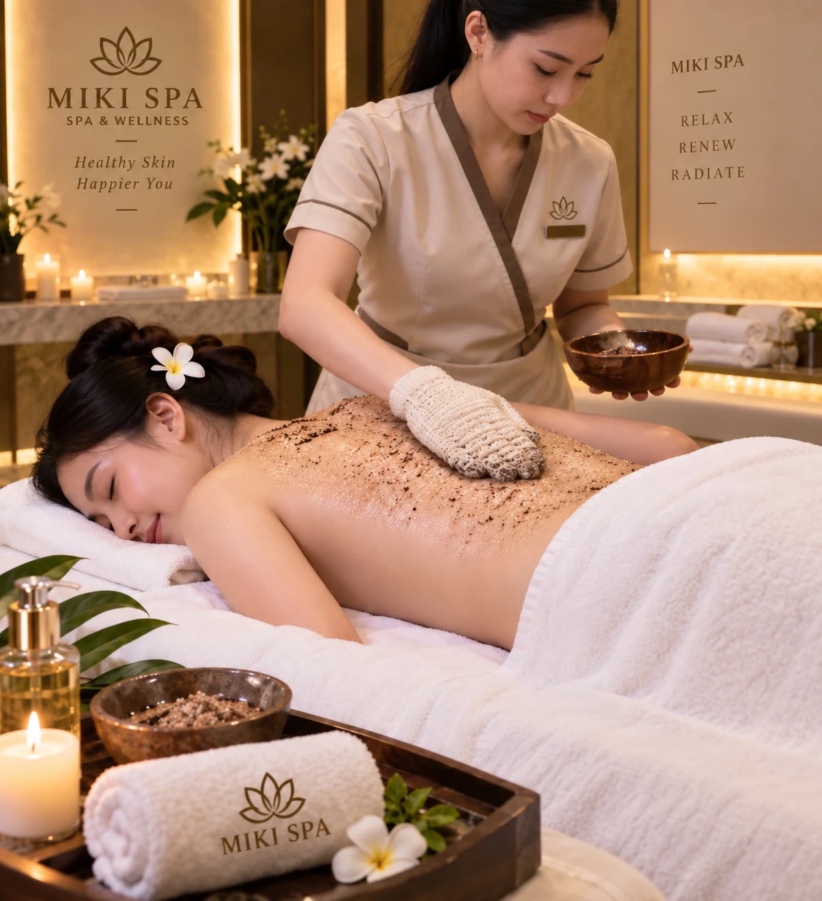
Body Care & Tẩy Tế Bào Chết
Tẩy tế bào chết da cơ thể và dưỡng ẩm mềm mịn, mang lại cảm giác thư giãn tuyệt đối sau ngày dài.
Khám phá ngay →03 · THIẾT BỊ MIKI ĐANG SỬ DỤNG
Thiết bị thật.
Thông tin ngắn gọn, dễ hiểu.
Miki ưu tiên giới thiệu đúng tên máy, hình ảnh thật và những điểm khách cần biết trước khi đặt lịch.
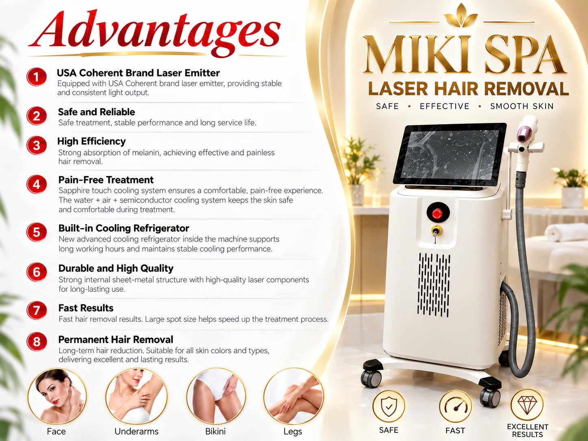
BM 109 · ICE COOLING
Thiết bị triệt lông Miki đang sử dụng.
BM 109 Hàn Băng -25°C là thiết bị Miki đang dùng cho dịch vụ triệt lông. Hình ảnh thực tế giúp khách dễ hình dung hơn trước khi đến spa.
02 · BẢNG GIÁ THAM KHẢO
Giá rõ ràng.
Dễ chọn dịch vụ phù hợp.
Xem nhanh các mức giá phổ biến trước, sau đó mở từng nhóm dịch vụ để xem chi tiết đầy đủ.
❄ICE CoolingĐầu làm lạnh đến -25°C
⚡Laser Hair RemovalCông nghệ triệt lông chuyên dụng
✦Personalized CareTư vấn theo tình trạng da & đặc điểm lông
COMBO SAVINGSGói combo chọn lọc có thể tiết kiệm đến 10%
Mức giảm và vùng áp dụng sẽ được Miki xác nhận khi tư vấn để phù hợp với từng dịch vụ.
Xem bảng giá đầy đủ ↗
LASER HAIR REMOVALNữ / Women
Thời gian dự kiếnMép & cằm30 phút
300.000đQuanh quầng vú30 phút
300.000đĐường bụng30 phút
300.000đNách nữ30 phút
500.000đLưng dưới nữ30 phút
500.000đBikini cơ bản30 phút
600.000đCẳng tay nữ30 phút
600.000đMông30 phút
600.000đCẳng chân (gồm gối)35 phút
700.000đDeep Bikini35 phút
800.000đĐùi35 phút
800.000đFull tay nữ40 phút
1.000.000đFull chân55 phút
1.300.000đGÓI 4 VÙNGFull Package NữKhoảng 120 phút
3.000.000đ
Xem bảng giá đầy đủ ↗
LASER HAIR REMOVALNam / Men
Thời gian dự kiếnRia mép30 phút
300.000đRâu30 phút
500.000đNách nam30 phút
600.000đLưng dưới nam30 phút
600.000đCẳng tay nam30 phút
800.000đNgực35 phút
800.000đBụng30 phút
800.000đFull tay nam40 phút
1.200.000đLưng45 phút
1.500.000đMEN'S FULL PACKAGE · 4 VÙNGFull Package NamKhoảng 120 phút
3.900.000đ
Xem bảng giá đầy đủ ↗
WAXING MENUWaxing
Giá theo vùngNáchUnderarms
180.000đMép / CằmUpper Lip / Chin
180.000đLông mày (tạo dáng)Eyebrows
200.000đTayFull Arms
450.000đNửa chânHalf Legs
450.000đFull chânFull Legs
700.000đBikini nữWomen’s Bikini · Brazilian / Hollywood
650.000đNgựcChest
400.000đBụngAbdomen
400.000đLưngBack
400.000đVùng đặc biệtSpecial area · xác nhận khi tư vấn
500.000đFull BodyKhông gồm bikini
1.800.000đGÓI TRỌN BỘFull Body VIPBao gồm Bikini
2.300.000đ
Xem bảng giá đầy đủ ↗
SKIN TREATMENTSChăm sóc da & Điều trị mụn
Liệu trình theo tình trạng daBasic FacialChăm sóc da cơ bản
500.000đDeep Cleansing FacialLàm sạch sâu
800.000đAnti-Aging FacialChăm sóc da lão hóa
1.200.000đAcne TreatmentChăm sóc và hỗ trợ điều trị mụn
900.000đClear Up Back AcneChăm sóc mụn lưng
1.000.000đBrighten Underarm AreaChăm sóc sáng vùng nách
500.000đCold Algae PeelPeel tảo lạnh
500.000đNANO-INFUSIONSkin BrighteningHỗ trợ da sạm/cháy nắng
1.200.000đ
MIKI SKIN SPA ACADEMY
Đào tạo học viên
Học phí và lịch học được tư vấn theo chương trình, thời lượng và nội dung thực hành thực tế.
Khóa đào tạo học viênChương trình thực hành
Liên hệTư vấn học phí và lịch khai giảngHotline / Zalo
0935 555 170LASER CARE GUIDEChuẩn bị trước & chăm sóc sau triệt
Trước buổi triệt
Tránh waxing, nhổ lông hoặc điện phân trong 2–3 tuần trước buổi hẹn. Cạo nhẹ vùng triệt trước khoảng 1 ngày và hạn chế phơi nắng hoặc sử dụng giường nhuộm da ít nhất 1 tuần.
Sau buổi triệt
Tránh tắm quá nóng, xông hơi và vận động nặng trong 24–48 giờ. Làm dịu da theo hướng dẫn và dùng kem chống nắng phổ rộng SPF 30+ cho vùng da tiếp xúc với nắng.
* Giá hiển thị mang tính tham khảo; dịch vụ và kế hoạch chăm sóc cuối cùng được xác nhận sau khi tư vấn trực tiếp.
04 · HÌNH ẢNH & VIDEO THỰC TẾ
Không gian thật.
Hình ảnh thật từ Miki.
Một vài hình ảnh và video nổi bật để bạn xem nhanh không gian, thao tác dịch vụ và trải nghiệm thực tế tại Miki.
Video nổi bật
Khoảnh khắc tại phòng dịch vụVideo ghi lại không gian và một số thao tác trong quá trình phục vụ tại Miki.
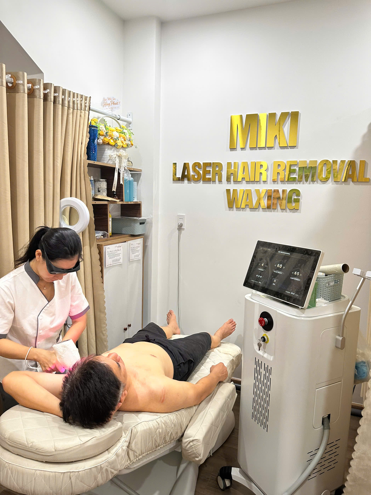
Triệt lông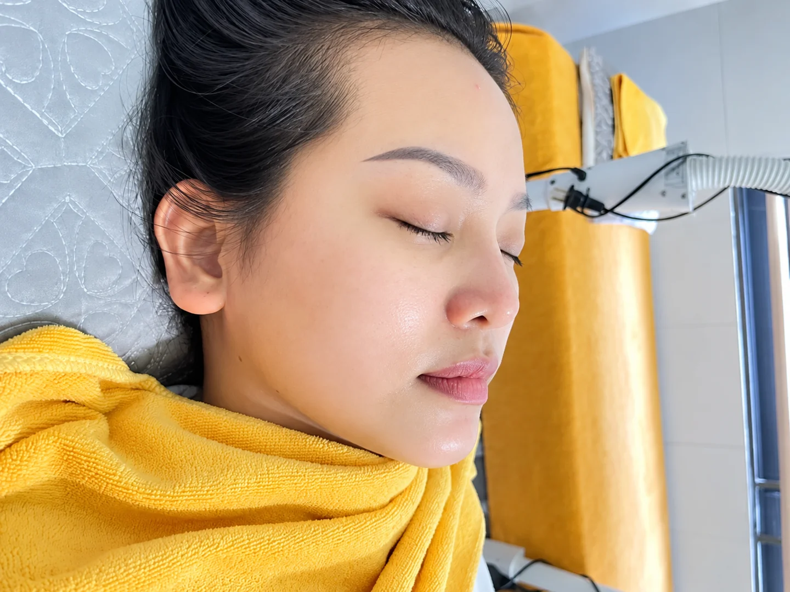
Chăm sóc da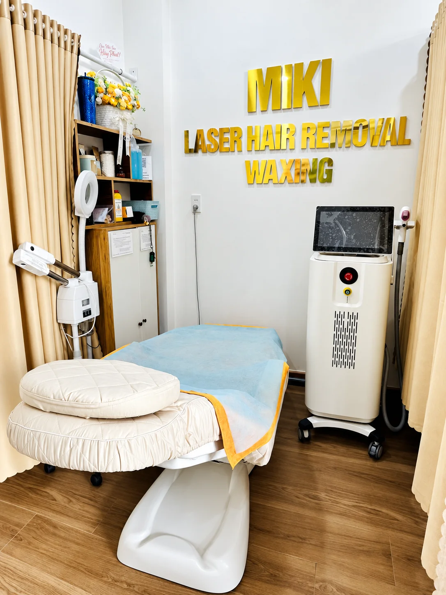
Không gian riêng tư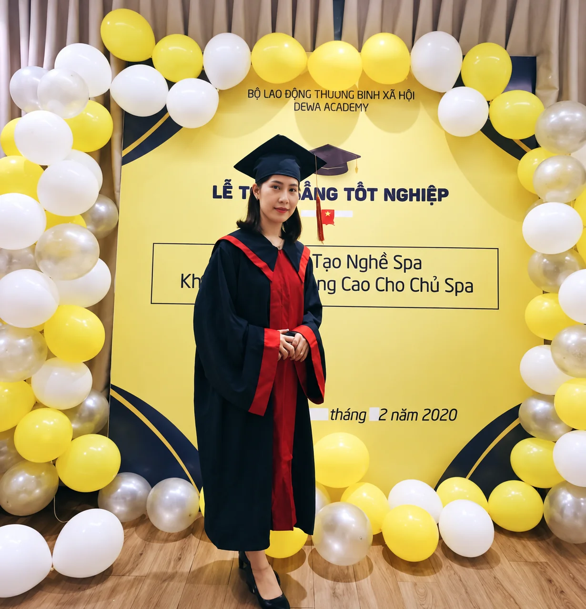
Đào tạo học viênSPACE DETAILKhông gian nhỏ gọn, sáng sủa
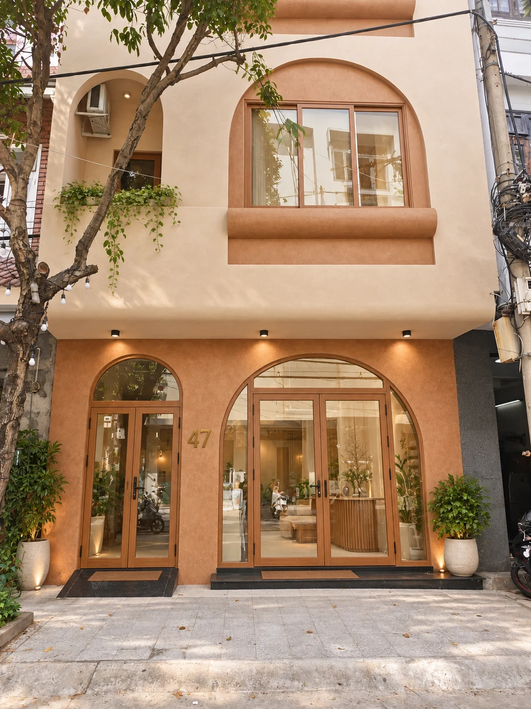
STORE FRONTMặt tiền dễ nhận diện
05 · FIRST TIME AT MIKI
4 bước đơn giản
để bạn yên tâm trước buổi hẹn.
Lắng nghe
Khách chia sẻ nhu cầu, vùng cần chăm sóc và mong muốn của mình.
Tư vấn
Chuyên viên trao đổi rõ về dịch vụ phù hợp, quy trình và những lưu ý cần thiết.
Thực hiện
Dịch vụ được thực hiện nhẹ nhàng, chú trọng vệ sinh, sự riêng tư và phản hồi của khách trong suốt quá trình.
Chăm sóc sau
Sau dịch vụ, khách được hướng dẫn cách chăm sóc và gợi ý lịch tiếp theo khi cần.
06 · GOOGLE REVIEWS
Khách hàng nói gì
sau khi đến Miki.
Một vài điểm khách thường đánh giá cao khi đến Miki: không gian riêng tư, quy trình rõ ràng và cảm giác nhẹ nhàng trong suốt buổi hẹn.
Các đánh giá đầy đủ vẫn được xem trực tiếp trên Google Maps để bảo đảm minh bạch.
★★★★★
Không gian sạch sẽ, riêng tưKhách dễ cảm thấy thoải mái hơn nhờ phòng dịch vụ gọn gàng, yên tĩnh và phục vụ 1-on-1.
Google review highlights★★★★★
Tư vấn rõ ràng trước dịch vụMiki giải thích nhanh về quy trình, vùng điều trị và lưu ý trước/sau dịch vụ để khách yên tâm hơn.
Google review highlights★★★★★
Trải nghiệm nhẹ nhàng, thân thiệnPhù hợp với khách mới đi spa hoặc khách quốc tế cần trao đổi nhanh, dễ hiểu và lịch sự.
Google review highlightsMIKI AI · QUICK CONSULTATION
Tư vấn triệt lông cùng Miki AI
Nếu bạn mới tìm hiểu dịch vụ, hãy hỏi nhanh Miki AI về triệt lông, làn da nhạy cảm, chuẩn bị trước buổi hẹn hoặc thiết bị BM 109.
Miki AI cung cấp thông tin tham khảo và hỗ trợ chuẩn bị trước dịch vụ; không thay thế tư vấn y tế hoặc chẩn đoán.
✦
AI LASER CONSULTATION
Bạn đang quan tâm vùng nào?
Hỏi về chuẩn bị trước buổi triệt, cảm giác khi thực hiện, chăm sóc sau dịch vụ hoặc công nghệ BM 109 Hàn Băng -25°C.
01 Chọn vùng
02 Chia sẻ nhu cầu
03 Nhận hướng dẫn
08 · FAQ CHUYÊN SÂU
Câu hỏi phổ biến
trước khi chọn dịch vụ.
Website hiển thị trước các câu hỏi được xem nhiều nhất. Bộ 100 FAQ vẫn được giữ lại để hỗ trợ Miki AI và khách cần đọc sâu hơn.
Waxing là gì?
Waxing là phương pháp dùng sáp để lấy sợi lông ra khỏi nang. Kết quả thường kéo dài hơn cạo vì lông không chỉ bị cắt ở bề mặt da.
Waxing khác cạo lông như thế nào?
Cạo chỉ cắt phần lông trên bề mặt, còn waxing kéo sợi lông ra từ gốc. Waxing có thể cho cảm giác da mịn lâu hơn nhưng dễ gây đỏ, kích ứng hoặc lông mọc ngược ở một số người.
Waxing có đau không?
Có thể có cảm giác đau hoặc rát ngắn khi kéo sáp. Mức độ phụ thuộc vùng làm, độ dày lông, ngưỡng đau và tình trạng da.
Lông nên dài bao nhiêu trước khi waxing?
Lông cần đủ dài để sáp bám chắc nhưng không nên quá dài. Nếu chưa chắc, hãy để chuyên viên kiểm tra thay vì tự cắt quá sát trước buổi hẹn.
Có nên cạo ngay trước khi waxing không?
Không nên cạo sát ngay trước buổi waxing vì sáp cần đủ thân lông để bám và kéo lông ra hiệu quả.
Vì sao da đỏ sau waxing?
Waxing tạo lực kéo lên lông và bề mặt da nên đỏ nhẹ hoặc nhạy cảm tạm thời có thể xảy ra. Nếu đau, phồng rộp hoặc kéo dài bất thường nên được đánh giá.
Waxing có gây viêm nang lông không?
Waxing có thể làm nang lông kích ứng và trong một số trường hợp góp phần gây viêm nang lông. Vệ sinh phù hợp, hạn chế ma sát và không cạy nặn giúp giảm nguy cơ.
Lông mọc ngược sau waxing là gì?
Đó là khi sợi lông mới cong hoặc phát triển trở lại vào da thay vì đi thẳng ra ngoài. Lông xoăn, dày sừng và ma sát có thể làm tình trạng này dễ xuất hiện hơn.
Có nên nặn lông mọc ngược không?
Không nên cạy hoặc nặn vì có thể tăng viêm, nhiễm trùng, thâm và sẹo. Nếu vùng đó đau tăng, có mủ hoặc sưng nóng, nên đi khám.
Khi nào nên tẩy tế bào chết sau waxing?
Không nên tẩy mạnh ngay sau waxing. Hãy chờ da hết đỏ và nhạy cảm rồi mới quay lại tẩy tế bào chết nhẹ, tùy khả năng dung nạp của da.
Có nên tắm nước nóng ngay sau waxing không?
Nên tránh nhiệt cao khi da còn đỏ hoặc nhạy cảm. Tắm nước quá nóng, xông hơi và ma sát mạnh có thể làm cảm giác khó chịu tăng lên.
Có nên tập thể thao ngay sau waxing không?
Nếu vùng da còn nhạy cảm, nên hạn chế hoạt động gây nhiều mồ hôi và ma sát trong thời gian đầu để giảm kích ứng.
Có nên đi biển hoặc hồ bơi ngay sau waxing không?
Nên đợi da ổn định trước khi tiếp xúc nhiều với nắng, nước hồ bơi hoặc môi trường có thể gây kích ứng.
Waxing vùng bikini cần lưu ý gì?
Da vùng bikini dễ chịu ma sát và có nguy cơ lông mọc ngược. Mặc đồ thoáng, giữ sạch và tránh cạy nặn các nốt sau waxing.
Waxing nách có làm thâm nách không?
Waxing không phải nguyên nhân duy nhất của thâm. Viêm, ma sát, cơ địa tăng sắc tố và kích ứng lặp lại đều có thể làm vùng nách sẫm màu hơn.
Da đang cháy nắng có waxing được không?
Không nên waxing trên vùng da đang cháy nắng, bong tróc, trầy xước hoặc viêm rõ. Nên chờ da hồi phục.
Đang dùng retinol hoặc tretinoin có waxing được không?
Cần báo trước cho chuyên viên. Retinoid và các hoạt chất gây bong có thể làm da nhạy hơn, đặc biệt ở vùng mặt, nên có thể cần hoãn waxing.
Đang dùng isotretinoin có nên waxing không?
Isotretinoin làm da rất nhạy và dễ tổn thương. Hãy trao đổi với bác sĩ điều trị và thông báo cho cơ sở trước bất kỳ thủ thuật waxing nào.
Waxing có làm lông mọc dày hơn không?
Waxing không làm tăng số lượng nang lông. Cảm nhận về độ dày khi lông mọc lại có thể khác nhau theo cơ địa và chu kỳ lông.
Khi nào cần đi khám sau waxing?
Nếu có đau tăng, phồng rộp, sưng nóng, mủ, vùng đỏ lan rộng hoặc phản ứng kéo dài, nên được nhân viên y tế đánh giá.
Bạn vẫn còn câu hỏi về waxing?
Triệt lông laser hoạt động như thế nào?
Năng lượng ánh sáng được sắc tố trong lông hấp thu và chuyển thành nhiệt, làm tổn thương nang lông để giảm khả năng mọc lông về sau.
Laser có loại bỏ lông vĩnh viễn 100% không?
Không nên cam kết sạch lông 100% vĩnh viễn. Laser có thể giảm lông lâu dài; lông mọc lại thường ít, mảnh hoặc nhạt hơn và một số người cần buổi duy trì.
Tại sao cần nhiều buổi laser?
Lông không đồng thời ở cùng một giai đoạn tăng trưởng. Một chuỗi buổi giúp tác động vào nhiều nhóm lông ở thời điểm phù hợp hơn.
Thông thường cần bao nhiêu buổi?
Số buổi thay đổi theo vùng, màu và độ dày lông, màu da, thiết bị, hormone và đáp ứng cá nhân. Nguồn y khoa thường mô tả cần nhiều buổi, thường khoảng 4–8 hoặc hơn.
Bao lâu làm laser một lần?
Khoảng cách buổi phụ thuộc vùng và chu kỳ lông. Nhiều liệu trình được bố trí cách nhau vài tuần; lịch chính xác nên dựa trên đánh giá trực tiếp.
Sau buổi đầu lông có rụng ngay không?
Không nhất thiết. Lông đã được tác động có thể rụng dần trong vài ngày đến vài tuần.
Laser có đau không?
Nhiều người mô tả cảm giác châm nóng hoặc như dây thun bật nhẹ vào da. Mức độ phụ thuộc vùng, thiết bị, thông số và ngưỡng đau.
Sau laser da đỏ có bình thường không?
Đỏ và sưng nhẹ quanh nang có thể xuất hiện tạm thời. Nếu đau nhiều, phồng rộp hoặc phản ứng kéo dài, cần liên hệ cơ sở hoặc nhân viên y tế.
Laser có cần nghỉ dưỡng không?
Laser triệt lông thường không cần thời gian nghỉ dưỡng đáng kể, nhưng da có thể đỏ hoặc nhạy cảm tạm thời.
Trước laser nên cạo hay nhổ lông?
Thông thường nên cạo theo hướng dẫn và tránh waxing, nhổ hoặc điện phân trước liệu trình vì laser cần mục tiêu lông còn trong nang.
Có nên waxing giữa các buổi laser không?
Thường không nên vì waxing lấy lông ra khỏi nang. Nếu cần xử lý lông giữa các buổi, hãy làm theo hướng dẫn cạo của cơ sở.
Có cần tránh nắng trước laser không?
Có. Da rám nắng có thể làm tăng nguy cơ tác dụng phụ và ảnh hưởng lựa chọn thông số. Nên tránh tanning và bảo vệ da khỏi nắng.
Sau laser có cần chống nắng không?
Có. Bảo vệ vùng điều trị khỏi nắng và dùng kem chống nắng phổ rộng phù hợp giúp giảm nguy cơ kích ứng và thay đổi sắc tố.
Da ngăm có triệt laser được không?
Có thể, nhưng lựa chọn thiết bị, bước sóng và thông số phải phù hợp. Kinh nghiệm của người thực hiện với nhiều tông da rất quan trọng.
Lông vàng, trắng hoặc xám có đáp ứng laser tốt không?
Thường kém hơn lông sẫm vì các sợi lông này có ít sắc tố để hấp thu năng lượng laser.
Lông đỏ có đáp ứng laser không?
Lông đỏ thường đáp ứng kém hơn lông đen hoặc nâu vì đặc tính sắc tố khác.
Laser có làm da bị bỏng không?
Bỏng là biến chứng có thể xảy ra nếu thiết bị hoặc thông số không phù hợp. Vì vậy cần sàng lọc da và thực hiện bởi người được đào tạo phù hợp.
Laser có gây thâm hoặc sáng màu da không?
Thay đổi sắc tố tối hoặc sáng có thể xảy ra, thường tạm thời nhưng hiếm khi kéo dài. Nguy cơ tăng khi da rám nắng hoặc thông số không phù hợp.
Laser có gây sẹo không?
Sẹo là tác dụng phụ hiếm nhưng có thể xảy ra. Chọn cơ sở phù hợp và tuân thủ chăm sóc trước/sau giúp giảm rủi ro.
Có triệt laser trên hình xăm được không?
Không nên chiếu laser triệt lông trực tiếp lên vùng có hình xăm vì sắc tố mực có thể hấp thu năng lượng và làm tăng nguy cơ tổn thương.
Có triệt vùng chân mày hoặc sát mắt được không?
Laser triệt lông không được khuyến nghị ở mí mắt, chân mày hoặc vùng sát mắt do nguy cơ tổn thương mắt.
Vì sao phải đeo kính bảo hộ?
Laser có thể gây tổn thương mắt. Người được điều trị và người thực hiện cần dùng bảo vệ mắt phù hợp trong quá trình chiếu.
Có thể dùng kem tê khi laser không?
Một số vùng nhạy cảm có thể được cân nhắc kem tê theo quy trình phù hợp. Không nên tự ý bôi lượng lớn hoặc dùng sai hướng dẫn.
Laser vùng nách có hiệu quả không?
Nách là vùng thường được điều trị. Hiệu quả phụ thuộc màu, độ dày lông, da và đáp ứng cá nhân.
Laser vùng bikini có được không?
Bikini là vùng thường được triệt laser. Cần đánh giá da, tránh vùng tổn thương và tuân thủ hướng dẫn chăm sóc.
Laser vùng mặt nữ có cần duy trì không?
Có thể. Lông mặt nữ chịu ảnh hưởng hormone nhiều hơn nên khả năng mọc lại và nhu cầu duy trì có thể cao hơn các vùng khác.
Hormone có ảnh hưởng kết quả triệt lông không?
Có. Những tình trạng làm tăng mọc lông do hormone có thể khiến lông mới tiếp tục xuất hiện dù các sợi hiện tại đã được giảm.
PCOS có làm triệt lông kém hiệu quả không?
PCOS có thể liên quan tăng lông do hormone. Laser có thể giảm lông hiện có nhưng không điều trị nguyên nhân hormone, nên có thể cần duy trì và đánh giá y khoa.
Khi nào nên hoãn laser?
Nên hoãn và được đánh giá nếu vùng da đang cháy nắng, nhiễm trùng, tổn thương, phản ứng mạnh hoặc có yếu tố sức khỏe/thuốc làm tăng nguy cơ.
Cần báo những thuốc nào trước khi laser?
Hãy báo tất cả thuốc kê đơn, không kê đơn và sản phẩm đang dùng, đặc biệt thuốc làm da nhạy sáng hoặc các liệu trình trị mụn như isotretinoin.
Bạn muốn biết liệu trình laser phù hợp với vùng nào?
Da dầu có cần dưỡng ẩm không?
Có. Da dầu vẫn có thể thiếu nước hoặc hàng rào da suy yếu. Chọn dưỡng ẩm nhẹ, phù hợp và không gây bít tắc nếu da dễ nổi mụn.
Da dầu có thể bị thiếu nước không?
Có. Lượng dầu và lượng nước của lớp sừng là hai vấn đề khác nhau, nên da có thể vừa bóng dầu vừa căng hoặc thiếu nước.
Rửa mặt càng nhiều càng sạch da đúng không?
Không. Rửa hoặc chà xát quá mức có thể làm da kích ứng và tổn thương hàng rào bảo vệ.
Nên rửa mặt bao nhiêu lần mỗi ngày?
Với đa số người, làm sạch dịu nhẹ khoảng hai lần mỗi ngày và sau khi đổ nhiều mồ hôi là nguyên tắc phổ biến; cần điều chỉnh theo tình trạng da.
Nước nóng có tốt cho da mặt không?
Nước quá nóng có thể làm da khô và khó chịu hơn. Nước ấm vừa phải thường phù hợp hơn.
Tẩy tế bào chết mỗi ngày có tốt không?
Không phải ai cũng phù hợp. Tẩy quá thường xuyên có thể gây rát, bong tróc và suy yếu hàng rào da.
AHA và BHA có nên dùng cùng lúc không?
Có thể trong một số routine nhưng không phải lúc nào cũng cần. Khi mới dùng hoặc da nhạy cảm, nên tránh chồng quá nhiều hoạt chất mạnh.
Retinol có thể gây bong da không?
Có. Khô, đỏ hoặc bong có thể xảy ra khi mới bắt đầu. Tăng tần suất từ từ và dưỡng ẩm phù hợp thường giúp da dung nạp tốt hơn.
Có nên dùng retinol khi da đang kích ứng?
Nếu da đang đỏ, rát hoặc bong nhiều, tiếp tục hoạt chất mạnh có thể làm tình trạng nặng hơn. Nên ưu tiên phục hồi và hỏi chuyên gia khi cần.
Kem chống nắng có cần dùng khi trời nhiều mây?
Tia UV vẫn có thể hiện diện khi trời nhiều mây. Bảo vệ da khỏi nắng là một phần quan trọng của chăm sóc da hằng ngày.
SPF 30 có đủ không?
Các nguồn da liễu thường khuyến nghị kem chống nắng phổ rộng SPF 30 trở lên, kết hợp thoa đủ lượng và thoa lại khi cần.
Da nhạy cảm nên chọn mỹ phẩm thế nào?
Ưu tiên công thức đơn giản, dịu nhẹ và thử từng sản phẩm mới. Hương liệu hoặc nhiều hoạt chất mạnh có thể gây khó chịu ở một số người.
Non-comedogenic nghĩa là gì?
Đây là cách mô tả sản phẩm được thiết kế để ít có xu hướng làm bít tắc lỗ chân lông hơn, hữu ích khi chọn sản phẩm cho da dễ mụn.
Da khô có nên dùng sữa rửa mặt tạo bọt mạnh?
Nếu sau rửa da căng, rát hoặc bong, sản phẩm có thể quá mạnh với da. Một chất làm sạch dịu hơn thường phù hợp hơn.
Hàng rào bảo vệ da là gì?
Đó là lớp ngoài của da giúp giữ nước và hạn chế tác động từ môi trường. Khi suy yếu, da dễ khô, rát và nhạy cảm hơn.
Dấu hiệu hàng rào da suy yếu là gì?
Da có thể khô căng, châm chích, đỏ, bong hoặc đột nhiên không dung nạp những sản phẩm trước đây vẫn dùng được.
Có nên đổi nhiều sản phẩm cùng lúc?
Không nên nếu muốn biết da phản ứng với sản phẩm nào. Thêm từng sản phẩm giúp dễ theo dõi khả năng dung nạp.
Stress có ảnh hưởng làn da không?
Stress có thể ảnh hưởng thói quen chăm sóc, giấc ngủ và một số tình trạng da. Routine đơn giản, đều đặn thường hữu ích hơn việc thay đổi liên tục.
Có nên nặn mọi loại mụn khi facial?
Không. Không phải tổn thương nào cũng phù hợp để lấy nhân. Tổn thương viêm sâu, đau hoặc nghi nhiễm trùng cần được đánh giá cẩn thận.
Khi nào vấn đề da nên được bác sĩ khám?
Khi có tổn thương đau nhiều, lan nhanh, chảy dịch, nhiễm trùng, sẹo tiến triển, phản ứng kéo dài hoặc tình trạng không cải thiện với chăm sóc thông thường.
Bạn muốn xây dựng routine phù hợp với làn da?
Mụn hình thành như thế nào?
Mụn liên quan đến bít tắc nang lông bởi dầu và tế bào chết, cùng với viêm và các yếu tố sinh học khác. Mức độ và loại tổn thương khác nhau ở từng người.
Mụn đầu đen có phải do da bẩn không?
Không. Màu đen chủ yếu do vật chất trong lỗ chân lông tiếp xúc không khí và bị oxy hóa, không phải vì bụi bẩn đơn thuần.
Mụn đầu trắng là gì?
Đó là dạng nhân kín khi lỗ nang bị bít nhưng bề mặt vẫn đóng. Không nên cố nặn mạnh vì có thể gây viêm.
Mụn viêm khác mụn ẩn thế nào?
Mụn viêm thường đỏ, sưng hoặc đau; mụn không viêm chủ yếu là đầu đen và đầu trắng. Cách xử lý có thể khác nhau.
Có nên nặn mụn tại nhà không?
Không nên cạy hoặc bóp mụn thường xuyên vì có thể tăng viêm, nhiễm trùng, thâm và nguy cơ sẹo.
Rửa mặt nhiều có làm hết mụn nhanh hơn không?
Không. Làm sạch quá mức và chà xát có thể kích ứng da, khiến việc kiểm soát mụn khó hơn.
Mụn có phải do da không sạch không?
Không đơn giản như vậy. Mụn chịu ảnh hưởng của dầu, bít tắc nang, viêm, hormone, di truyền và nhiều yếu tố khác.
Da mụn có cần dưỡng ẩm không?
Có. Nhiều hoạt chất trị mụn gây khô; dưỡng ẩm không gây bít tắc có thể giúp da dung nạp routine tốt hơn.
Da mụn có cần chống nắng không?
Có. Chống nắng đặc biệt quan trọng khi dùng hoạt chất làm da nhạy nắng và giúp hạn chế vết thâm sau viêm đậm thêm.
Benzoyl peroxide dùng để làm gì?
Benzoyl peroxide giúp giảm vi khuẩn liên quan đến mụn và có tác dụng với tổn thương viêm. Nó có thể gây khô, kích ứng và làm bạc màu vải.
Benzoyl peroxide nồng độ cao có luôn tốt hơn không?
Không. Nồng độ thấp có thể vẫn hiệu quả và ít kích ứng hơn. Nên bắt đầu thận trọng theo hướng dẫn phù hợp.
Salicylic acid có tác dụng gì với mụn?
Salicylic acid giúp hạn chế bít tắc nang lông và thường có mặt trong sản phẩm cho mụn đầu đen, đầu trắng.
Adapalene là gì?
Adapalene là retinoid bôi giúp ngăn bít tắc và giảm viêm. Nó có thể gây khô hoặc kích ứng khi mới sử dụng.
Tretinoin có phải mỹ phẩm thông thường không?
Tretinoin là retinoid điều trị và ở nhiều nơi là thuốc kê đơn. Nên sử dụng theo hướng dẫn của bác sĩ hoặc chuyên gia y tế phù hợp.
Có nên dùng nhiều hoạt chất trị mụn cùng lúc?
Không nên tự chồng nhiều hoạt chất mạnh ngay từ đầu. Kết hợp có thể hiệu quả nhưng cũng tăng kích ứng nếu không có kế hoạch phù hợp.
Bao lâu mới thấy sản phẩm trị mụn có hiệu quả?
Điều trị mụn cần thời gian. Một số liệu trình cần khoảng 4–8 tuần để bắt đầu thấy thay đổi và 2–3 tháng hoặc lâu hơn để đánh giá rõ.
Mụn có thể nặng hơn lúc mới dùng sản phẩm không?
Một số người thấy da khô, đỏ hoặc mụn thay đổi khi bắt đầu. Nếu phản ứng mạnh, đau, sưng hoặc kéo dài, nên ngưng tự thử nghiệm và được đánh giá.
Kháng sinh bôi có nên dùng một mình không?
Hướng dẫn da liễu hiện đại thường tránh dùng kháng sinh bôi đơn độc kéo dài vì nguy cơ kháng kháng sinh; phác đồ cần do bác sĩ quyết định.
Azelaic acid có dùng cho da mụn không?
Azelaic acid có thể được dùng trong điều trị mụn và hỗ trợ một số vấn đề sắc tố sau mụn. Khả năng dung nạp tùy từng da.
Mụn do mỹ phẩm là gì?
Một số sản phẩm dầu hoặc gây bít tắc có thể góp phần tạo mụn, kể cả sản phẩm tóc chạm vào trán và đường chân tóc.
Sản phẩm tóc có thể gây mụn trán không?
Có. Dầu hoặc thành phần từ sản phẩm tóc có thể tiếp xúc da và góp phần làm bít tắc ở đường chân tóc, trán hoặc gáy.
Mồ hôi có gây mụn không?
Mồ hôi không phải nguyên nhân duy nhất, nhưng mồ hôi kết hợp dầu, ma sát và đồ bí có thể làm da dễ nổi mụn hơn. Nên làm sạch dịu nhẹ sau vận động.
Điện thoại có thể làm mụn nặng hơn không?
Ma sát và vật dụng tiếp xúc thường xuyên với da có thể góp phần kích ứng. Giữ bề mặt tiếp xúc sạch và giảm cọ xát có thể hữu ích.
Mụn ở lưng và ngực có cần điều trị khác mặt không?
Da cơ thể và dạng tổn thương có thể khác, nên sản phẩm và cách dùng không nhất thiết giống mặt. Mụn lan rộng hoặc viêm nhiều nên được bác sĩ đánh giá.
Mụn nội tiết là gì?
Hormone có thể làm tăng hoạt động tuyến dầu và ảnh hưởng mụn. Mụn tái diễn theo chu kỳ hoặc kèm dấu hiệu hormone khác có thể cần đánh giá y khoa.
Ăn uống có gây mụn không?
Mối liên hệ giữa chế độ ăn và mụn không giống nhau ở mọi người. Không nên quy mọi trường hợp mụn cho một món ăn duy nhất.
Mụn có để lại thâm không?
Có. Sau viêm, da có thể để lại vết đỏ hoặc tăng sắc tố, đặc biệt khi tổn thương bị cạy nặn hoặc tiếp xúc nắng.
Thâm mụn có phải sẹo mụn không?
Không. Vết đổi màu sau viêm khác với sẹo lõm hoặc sẹo lồi do thay đổi cấu trúc da, dù chúng có thể cùng tồn tại.
Khi nào mụn cần gặp bác sĩ da liễu?
Nên đi khám khi mụn vừa-nặng, có nốt/cục đau, để lại sẹo, lan rộng, không đáp ứng sản phẩm không kê đơn hoặc ảnh hưởng nhiều đến chất lượng cuộc sống.
Spa có thể thay thế bác sĩ điều trị mụn nặng không?
Không. Spa có thể hỗ trợ chăm sóc da phù hợp phạm vi dịch vụ, nhưng mụn nặng, mụn nang/cục, nhiễm trùng hoặc cần thuốc phải được bác sĩ đánh giá.
Bạn chưa biết tình trạng mụn phù hợp với dịch vụ nào?
Lưu ý: FAQ chỉ cung cấp thông tin chăm sóc da và thẩm mỹ nói chung, không phải chẩn đoán hoặc chỉ định điều trị. Miki không thay thế bác sĩ da liễu. Nếu có mụn nặng, tổn thương đau, sưng nóng, có mủ, nhiễm trùng, phồng rộp, phản ứng kéo dài hoặc đang dùng thuốc điều trị da, khách nên được bác sĩ/nhân viên y tế phù hợp đánh giá trước.
Nguồn tham khảo biên soạn: American Academy of Dermatology (AAD), Mayo Clinic, Cleveland Clinic và NHS. Nội dung đã được diễn giải lại, không sao chép nguyên văn.
KẾT NỐI NHANH
Liên hệ nhanh.
Rõ ràng và dễ dùng.
Giữ lại các kênh liên hệ cần thiết nhất để khách Việt Nam và khách quốc tế nhắn tin, xem đường đi hoặc đặt lịch nhanh.
Nhắn Miki qua WhatsApp để hỏi dịch vụ, giá cả, chỉ dẫn đường đi hoặc hẹn giờ.
Chat WhatsAppQuét QR hoặc mở Zalo liên hệ trực tiếp Miki qua hotline 0935 555 170.
Mở Zalo47 Cô Giang, Hải Châu, Đà Nẵng
• Cách Cầu Rồng 5 phút di chuyển.
• Dễ dàng book Grab / Taxi cho du khách.
07 · MIKI SKIN SPA ACADEMY
Đào tạo học viên
theo hướng thực hành.
Chương trình đào tạo theo hướng thực hành cho học viên muốn học nghề spa bài bản, gọn gàng và dễ theo dõi hơn trên website.
Thực hành trực tiếp
Quy trình dịch vụ
Chăm sóc khách hàng
Định hướng nghề nghiệp
MIKI SKIN SPA · EDUCATION
Learn the craft.
Build the confidence.
Build the confidence.
Học phí, lịch học và nội dung từng khóa được tư vấn theo chương trình thực tế của Miki Skin Spa Academy.
Hotline tư vấn: 0935 555 170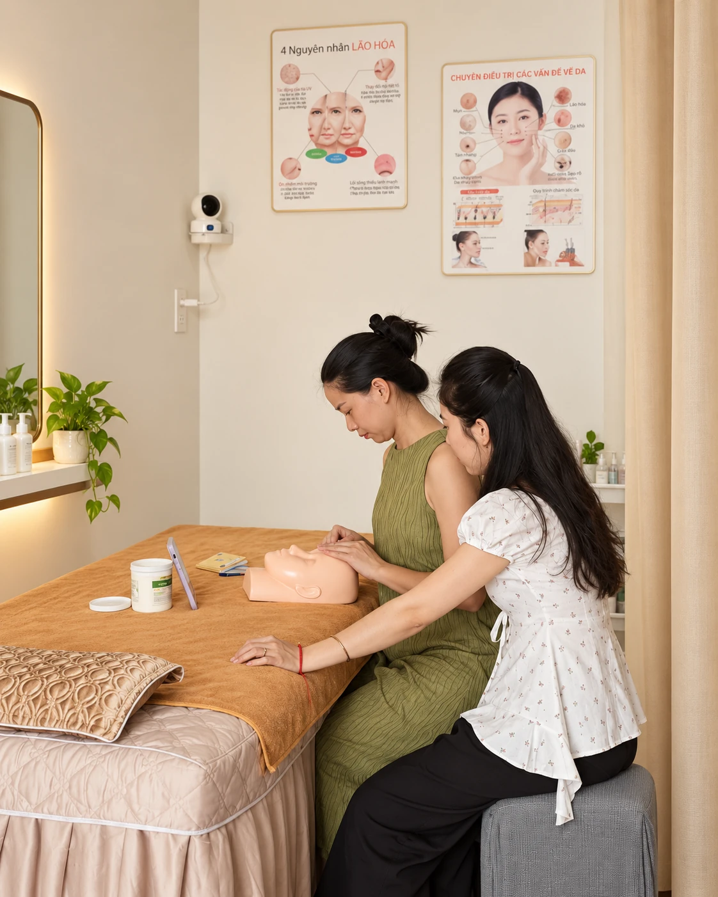